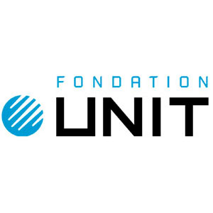
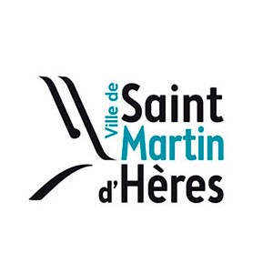
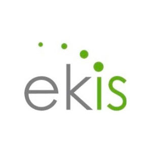
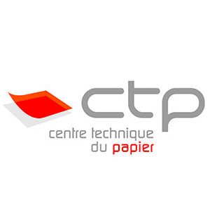
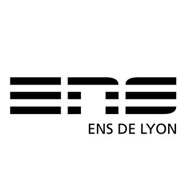

Expériences

Chef de projet Conception pédagogique multimédia
Mission générale :
Concevoir, réaliser et/ou déployer des contenus de formation en vue d’un apprentissage à distance.
Assurer l’accompagnement technico-pédagogique de projets portés par UNIT et/ou ses partenaires. Activités principales :
Mettre à disposition des étudiants et des enseignants du domaine des Sciences de l'Ingénieur des collections de ressources éducatives libres de qualité et en assurer la valorisation grâce à une large diffusion sur Internet
Concevoir, réaliser et/ou déployer des contenus de formation en vue d’un apprentissage à distance.
Assurer l’accompagnement technico-pédagogique de projets portés par UNIT et/ou ses partenaires. Activités principales :
Conception de contenus pédagogiques multimedia (images, sons, activités, animations...) et réutilisation, après adaptation, de contenus numériques existants
Intégration et mise à disposition des contenus de formation dans une plate-forme numérique d’apprentissage
Rédaction des documents de référence pour la production et l’utilisation des contenus (scénarii et storyboards, maquette, charte graphique, contrat de cession de droits, document technique, guide utilisateur...)
Conduite et coordination de projet (organisation, suivi planning, phase test, validation…)
Actions de communication (création de supports et visuels, newsletter, emailing…), webmastering et gestion de contenus en ligne
Activités associées :
Intégration et mise à disposition des contenus de formation dans une plate-forme numérique d’apprentissage
Rédaction des documents de référence pour la production et l’utilisation des contenus (scénarii et storyboards, maquette, charte graphique, contrat de cession de droits, document technique, guide utilisateur...)
Conduite et coordination de projet (organisation, suivi planning, phase test, validation…)
Actions de communication (création de supports et visuels, newsletter, emailing…), webmastering et gestion de contenus en ligne
Gestion et valorisation des ressources pédagogiques numériques en Sciences de l’Ingénieur
Réponse aux demandes internes et externes de conseil et d'expertise sur les REL et leur production
Participation à la mise en place d'indicateurs d'évaluation et d'usage des ressources pédagogiques
Administration de systèmes d'information documentaire, hébergement et stockage de ressources
Participation à des groupes de travail et/ou groupes projet UNT
Contribution à des actions et/ou projets transversaux portés par UNIT
Réponse aux demandes internes et externes de conseil et d'expertise sur les REL et leur production
Participation à la mise en place d'indicateurs d'évaluation et d'usage des ressources pédagogiques
Administration de systèmes d'information documentaire, hébergement et stockage de ressources
Participation à des groupes de travail et/ou groupes projet UNT
Contribution à des actions et/ou projets transversaux portés par UNIT
Chef de projet information documentaire
Mission générale :Mettre à disposition des étudiants et des enseignants du domaine des Sciences de l'Ingénieur des collections de ressources éducatives libres de qualité et en assurer la valorisation grâce à une large diffusion sur Internet
Activités principales :
Organisation du référencement des ressources en ligne, suivi de la qualité et de la cohérence globale de la base de ressources éducatives
Opérations de valorisation des collections documentaires en sciences de l'ingénieur
Administration fonctionnelle d’une plateforme ORI-OAI de bibliothèque numérique partagée
Contribution à la définition et la mise en oeuvre d'une politique en matière de constitution, d'accroissement et d'archivage du fonds documentaire, en collaboration avec les institutions partenaires d’UNIT
Implication dans des réseaux documentaires régionaux, nationaux et/ou internationaux Activités associées :
Conception et diffusion de lettres d'information électroniques : sollicitation des auteurs, rédaction d'articles, création Web/Infographie et mise en ligne
Gestion éditoriale de la thématique des Sciences de l'ingénieur dans la videothèque CANAL-U et publications comme contributeur (WebTV UNIT, INRIA-Fuscia)
Actions de formation et communications publiques Webmastering, rédaction et gestion de contenus Web, Web analytics
Veille technologique sur les méthodes et outils adaptés aux besoins de l'information scientifique et technique
Organisation du référencement des ressources en ligne, suivi de la qualité et de la cohérence globale de la base de ressources éducatives
Opérations de valorisation des collections documentaires en sciences de l'ingénieur
Administration fonctionnelle d’une plateforme ORI-OAI de bibliothèque numérique partagée
Contribution à la définition et la mise en oeuvre d'une politique en matière de constitution, d'accroissement et d'archivage du fonds documentaire, en collaboration avec les institutions partenaires d’UNIT
Implication dans des réseaux documentaires régionaux, nationaux et/ou internationaux Activités associées :
Conception et diffusion de lettres d'information électroniques : sollicitation des auteurs, rédaction d'articles, création Web/Infographie et mise en ligne
Gestion éditoriale de la thématique des Sciences de l'ingénieur dans la videothèque CANAL-U et publications comme contributeur (WebTV UNIT, INRIA-Fuscia)
Actions de formation et communications publiques Webmastering, rédaction et gestion de contenus Web, Web analytics
Veille technologique sur les méthodes et outils adaptés aux besoins de l'information scientifique et technique

Chargé de documentation électronique
Gestion, administration et paramétrage d'une base documentaire - progiciel de GED V-DOC Process
Support du service de Documentation-Archives pour l'Intranet documentaire Superdoc Webportal
Support du service de Documentation-Archives pour l'Intranet documentaire Superdoc Webportal

Assistant en gestion de documentation technique
Mission d'analyse et d'initialisation d'une base de données graphiques. Vérification, dédoublonnage, conversion, retouche des fichiers image, récupération d'illustrations en ligne
Mise à jour du process d'édition des documents
Mise à jour du process d'édition des documents

e-documentaliste - chargé de veille
Stage étudiant de 4 mois consacré à l’activité de veille au CTP
Enquête de besoins par questionnaire en ligne et réalisation d’un guide pratique de recherche sur Internet à destination des personnels ingénieurs
Assistance aux documentalistes/chargés de veille dans leurs activités documentaires (bulletinage, classement et indexation de documents au moyen de thésaurus métier, GEIDE avec Alexandrie module Web, recherche et commande d'articles, sourcing)
Enquête de besoins par questionnaire en ligne et réalisation d’un guide pratique de recherche sur Internet à destination des personnels ingénieurs
Assistance aux documentalistes/chargés de veille dans leurs activités documentaires (bulletinage, classement et indexation de documents au moyen de thésaurus métier, GEIDE avec Alexandrie module Web, recherche et commande d'articles, sourcing)

Projet tuteuré étudiant
Étude consacrée à la base de données en ligne WikiTic. État de l’art en matière de gestion bibliographique collaborative, comparatif de logiciels, migration de la base de notices depuis EndNote vers l'outil Wikindx en ligne
Référencement du site Web, promotion du projet
Référencement du site Web, promotion du projet